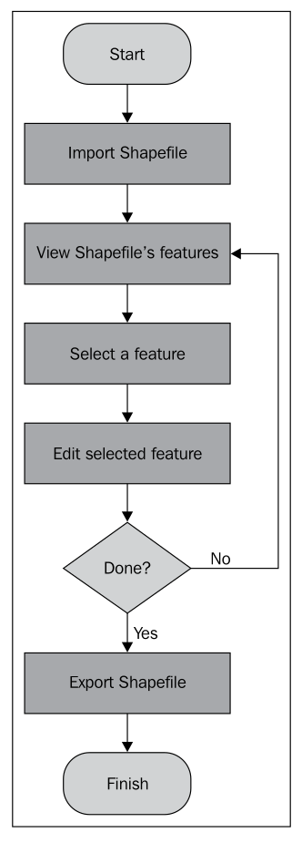
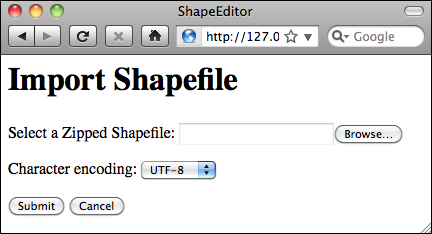
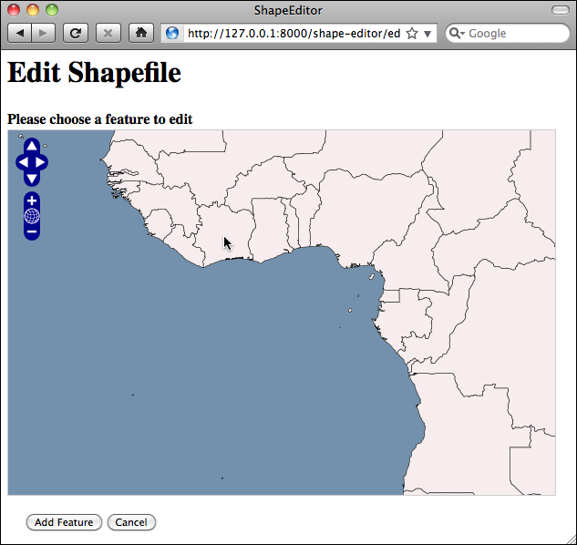
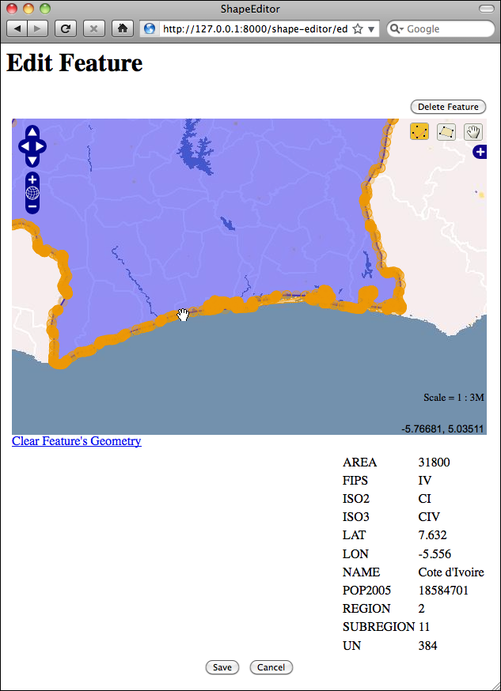
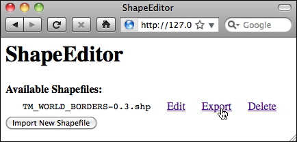

关于 ShapeEditor#
About ShapeEditor
正如我们所看到的，Shapefile 是一种常用的格式，用于存储、提供和传输地理空间数据。在本书中，我们已经广泛地使用了 Shapefile，获取了可以自由获取的地理空间数据，编写了从 Shapefile 加载数据的程序，并且以编程方式创建了 Shapefile。
虽然编辑与 Shapefile 特征相关联的属性是相对简单的，但编辑 Shapefile 本身的特征要复杂得多。一种方法是安装一个 GIS 系统，使用它导入数据、进行更改，然后再将数据导出到另一个 Shapefile 中。虽然这种方法可行，但如果你只是想对 Shapefile 中的几个特征进行修改，这种做法就显得不太方便。如果我们有一个专门设计来编辑 Shapefile 的 Web 应用程序，那将会更加简便。
这正是我们要实现的内容：一个基于 Web 的 Shapefile 编辑器。我们将这个程序命名为 ShapeEditor，虽然名字不怎么创新，但功能却非常实用。
以下是 ShapeEditor 的基本工作流程图：
用户首先通过 ShapeEditor 的 Web 界面导入一个 Shapefile 文件：
备注
我们的 ShapeEditor 实现并不是为了它的外观而设计的；它专注于功能实现。虽然可以通过添加样式表和编辑 HTML 模板来改善应用程序的外观，但这样做会使代码更难理解。因此，我们采取了非常简约的用户界面设计，至于美化工作，留给读者自己去完成。
导入 Shapefile 后，用户可以在地图上查看 Shapefile 的特征，并通过点击来选择某个特征。在这个例子中，我们导入了本书中多次使用的世界边界数据集：
然后，用户可以编辑所选特征的几何形状，并查看与该特征关联的属性列表：
完成修改后，用户可以通过点击主页上的 导出 超链接将 Shapefile 导出：
这就是 ShapeEditor 的基本功能。它是一个相对简单的系统，但如果你需要处理 Shapefile 格式的地理空间数据，它将非常有用。当然，通过实现 ShapeEditor，你将学会如何使用 GeoDjango 来实现你自己的复杂地理空间 Web 应用程序。
As we have seen, shapefiles are commonly used to store, make available, and transfer geospatial data. We have worked with shapefiles extensively in this book, obtaining freely-available geospatial data in shapefile format, writing programs to load data from a shapefile, and creating shapefiles programmatically.
While it is easy enough to edit the attributes associated with a shapefile’s features, editing the features themselves is a lot more complicated. One approach would be to install a GIS system and use it to import the data, make changes, and then export the data into another shapefile. While this works, it is hardly convenient if all you want to do is make a few changes to a shapefile’s features. It would be much easier if we had a web application specifically designed for editing shapefiles.
This is precisely what we are going to implement: a web-based shapefile editor. Rather unimaginatively, we’ll call this program ShapeEditor.
The following flowchart depicts the ShapeEditor’s basic workflow:
The user starts by importing a shapefile using the ShapeEditor’s web interface:
备注
Our ShapeEditor implementation wasn’t chosen for its good looks; instead, it concentrates on getting the features working. It would be easy to add stylesheets and edit the HTML templates to improve the appearance of the application, but doing so would make the code harder to understand. This is why we’ve taken such a minimalist approach to the user interface. Making it pretty is an exercise left to the reader.
Once the shapefile has been imported, the user can view the shapefile’s features on a map, and can select a feature by clicking on it. In this case, we have imported the World Borders Dataset used several times throughout this book:
The user can then edit the selected feature’s geometry, as well as see a list of the attributes associated with that feature:
Once the user has finished making changes to the shapefile, he or she can export the shapefile again by clicking on the Export hyperlink on the main page:
That pretty much covers the ShapeEditor’s functionality. It’s a comparatively simple system, but it can be very useful if you need to work with geospatial data in shapefile format. And, of course, through the process of implementing the ShapeEditor you will learn how to go about implementing your own complex geospatial web applications using GeoDjango.